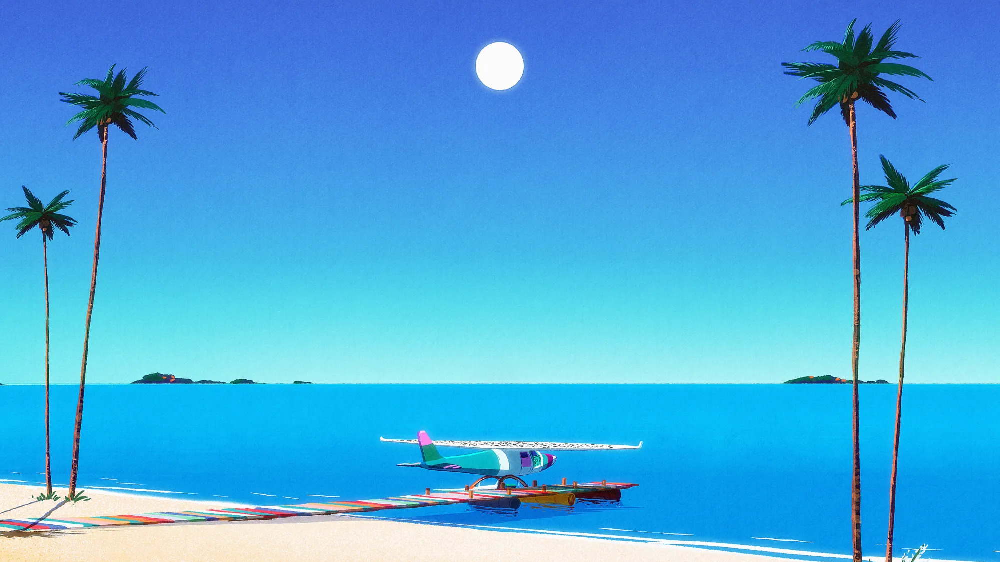

INTERACTIVE EXPERIENCE RESEARCH PROJECT
ENDLESS SUMMER
What was the first thing you paid attention to when interacting with the experience?
The first thing I noticed immediately when using the website was the colours and how visually alluring the first page was. The idea was that the first page was designed to ensure that the user resized the browser but through a reward of seeing the sunrise on the page.
Spend two minutes with the experience and create a list of each of your discrete actions.
I began by altering the page to ensure the experience was in the correct position. Then you press start and you follow the page to the introduction. Discussing the point of the experience “to deep dive into the essence of a summer day”. Continuing past the explanation you enter the tutorial with the instructions to “drag the wheel to continue”. Through these actions, the user began to understand the mechanics, allowing me to learn how to navigate through the website. You further learn more about how you can move within the screen and that there are hidden animations that I can activate. You can also activate poems that capture the essence of the website. Sound plays an important role within the website as it is made clear in the tutorial as they highlight that by holding down on the screen you can isolate the ambient sound and remove the background music. This results in me being fully immersed.
What part of the experience did you spend the most time engaging with?
While interacting with the visuals of the website. As I moved my mouse and looked through the websites scene the details of the design which is prominent in the details caught my attention and I was able to notice more detail the longer I engaged with the website.
What was the most common action in your two-minute interaction with the experience?
Past the tutorial, the most common action I completed was moving the point of view on the screen to find the hidden actions and read the poems that related to the scene. The result of the aim to find the hidden action allows me as the user to experience and take a longer time appreciating the design and the world created. This connects to the aim of the interactive website “to deep dive into the essence of a summer day”.
What is your impression of the intended primary goal of the interactive experience?
As stated the interactive experience of the interactive experience is to capture the “essence of a summer day”. This is also relevant through the bright colours and website story that depicts daily activities that are undertaken in summer.
How does the interactive experience communicate this primary goal?
The slow-paced design of the website highlights this creating a feeling of a slow summer day. The use of bright colours explores the hues that we commonly associate with summer. The sound included in the experience further enhances the immersion on the summer day. The ambient sound includes summer birds such as seagulls and also waves crashing onto the shore. All of the scenes include relaxing actions associated with summer's feeling and essence.
What is your impression of how the experience should be interacted with over time? (For how long and how many different times)
I believe that the experience can be appreciated multiple times but the most substantial impact would be after the first interaction with the interactive website.
How does the interactive experience communicate how it should be interacted with over time?
As you move through the experience the different stages and scenes and that they are different allow the user to remain engaged and interested. The different digital graphics and interactions retain the user’s engagement. The experience is beautiful and relaxing however, the more times I interact with the website, on different occasions, the more I become susceptible to the activities and the impact became less evocative.
What other media forms (digital or otherwise) does the experience reference?
The Media does reference the art form of painting as the style looked as if it has used painting to create the scenes. However, this could have been just digitally manipulated to resemble paintings with acrylics or gouache.
What does this reference/s communicate to you about how you should act when engaging with your research experience?
The references to multi-activity scenes ensure that the user should act in a slow-paced manner. This intentionally slow-moving website results in the mimicking of the pace of a summer’s day.
What does this reference/s communicate to you about how you should feel when engaging with your research experience?
The experience references the feeling of being calm and relaxed. The experience also evoked the feeling of nostalgia as the use of general connections to a universal experience of summer, sitting by the pool and swimming in the ocean resulted in a connection to memories of the users’ past summers.
What is the most frustrating part of the interaction to you and what makes that part frustrating?
The most frustrating part of the experience is that it can only be experienced on a smaller screen. The website only lets you continue if the page is minimised to a phone layout. This results in the experience being interrupted as it does not occupy the entire screen of a computer.
What is the most satisfying part of the interaction to you and what makes that part satisfying?
For me, the most satisfying aspect of the interaction is the cohesive style of the design. The bright hues and patterns that remind of the 80’s I think add to the nostalgic aesthetic of the website.
